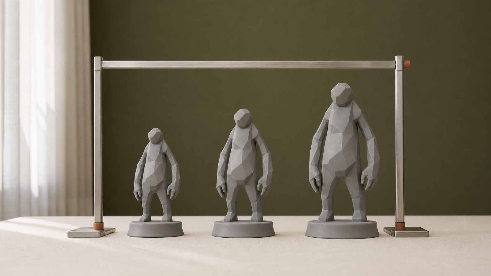
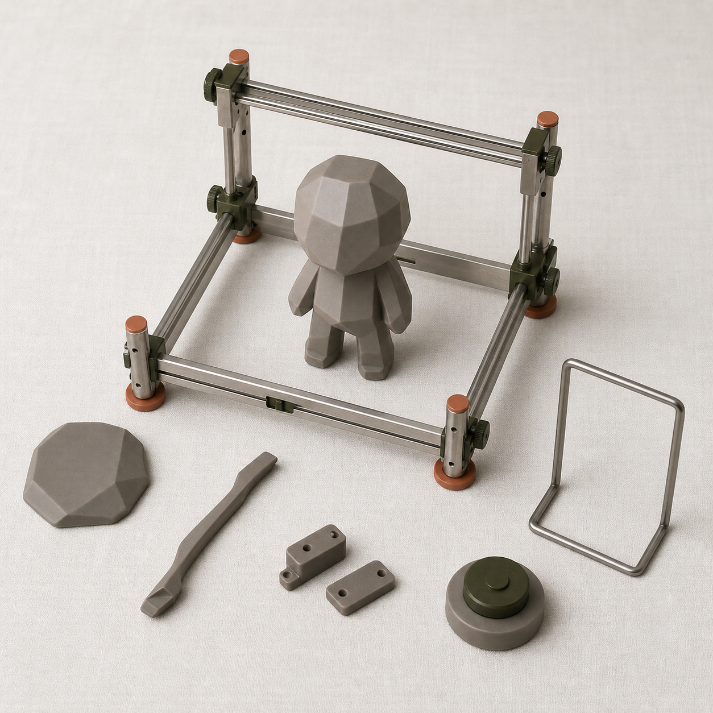
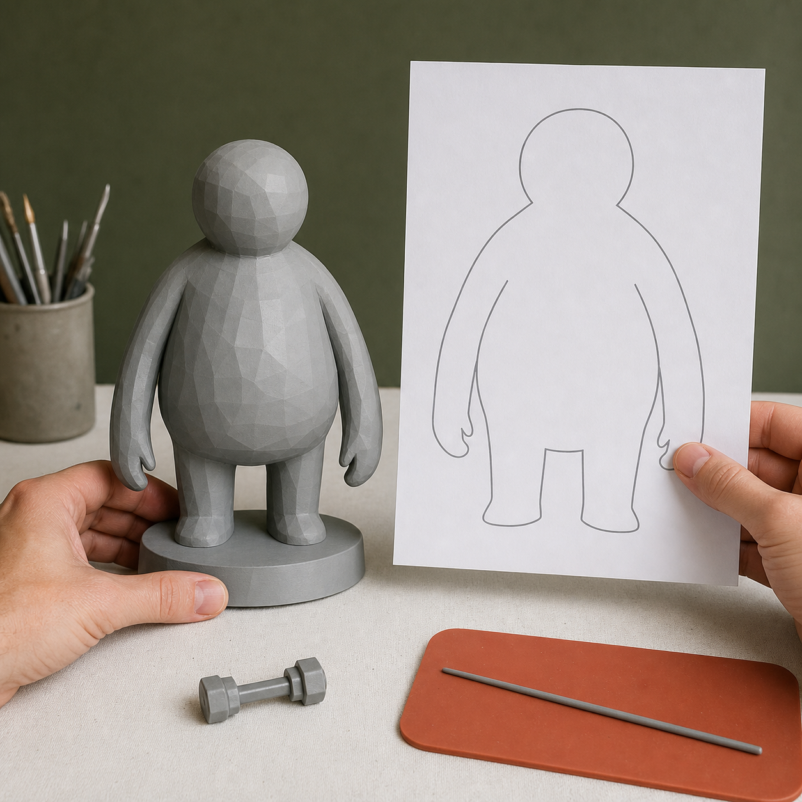

为什么五天课建议把作品控制在 8-12cm
第一次把角色或作品推进到实体时，尺寸不是最后在切片软件里随手填写的数字。它会同时改变薄片和连接是否成立、细节能否辨认、底座是否稳定、单次打印占用多少空间，以及后处理和涂装需要多少时间。尺寸过大，制造与修正可能挤占五天排程；尺寸过小，轮廓、表情和关键配件又可能在真实观看距离下失去作用。

具体问题
第一次把角色或作品推进到实体时，尺寸不是最后在切片软件里随手填写的数字。它会同时改变薄片和连接是否成立、细节能否辨认、底座是否稳定、单次打印占用多少空间，以及后处理和涂装需要多少时间。尺寸过大，制造与修正可能挤占五天排程；尺寸过小，轮廓、表情和关键配件又可能在真实观看距离下失去作用。
课程建议把首次完整作品优先控制在 8-12cm，是为了给判断、修模、打印、失败重试、灰模验证和基础表达留下共同的时间窗口。这一范围按完整姿态的外接尺寸理解，应把底座、长耳、翅膀、道具和伸展部件计算在内；它是起始判断范围，不是所有项目必须遵守的统一规格。
核心判断
合适的尺寸要同时通过五类检查：用途明确，完整外接尺寸可控，关键结构在目标材料与工艺下成立，核心辨识点在正常观看距离仍可见，打印与后处理能够进入五天排程。8-12cm 的价值在于把这些变量压到可以反复检查的范围，而不是保证任何模型缩到这个高度都会成功。
判断时应优先保住角色身份和结构稳定，再决定是否增加细节。若复杂姿态、细长配件或大面积悬空在建议尺寸内无法成立，可以加厚、合并、拆件、调整姿态，或把出口改为半身、浮雕、局部样。改变出口不是降低质量，而是让第一版产生可验证、可继续发展的结果。
步骤或标准
可在进入正式修模前完成下面六项检查，并把结果写入项目卡和版本记录。
- 明确用途与观看方式：只选择一个主要出口，写清桌面展示、结构验证、局部样或其他用途，以及主要观看距离。
- 测量完整外接尺寸：把主体、底座、耳朵、翅膀、道具和伸展姿态一起纳入 8-12cm 的范围判断。
- 检查结构与工艺：按目标材料复核薄片、细杆、连接面、底座、重心和拆件，标记需要加厚、合并或改姿态的位置。
- 制作真实尺寸校样：打印等比例轮廓或制作简单白模，从正常观看距离检查轮廓、面部和核心道具，并测试安全取放。
- 核算五天排程：估算切片、打印、失败重试、清洗固化、拆支撑、打磨、补土、涂装和拍摄的时间余量。
- 记录主、备与降级方案：主尺寸不成立时，明确备选尺寸以及半身、浮雕、局部样或拆件验证等出口，并同步版本号。
常见错误
以下错误会把尺寸问题推迟到成本更高的制造阶段。
- 只量躯干高度，不计算底座、道具和伸展部件；后果是打印占用、支撑、包装与展示空间被系统性低估。
- 把 8-12cm 当作固定答案，直接等比缩放复杂模型；后果是薄片、连接和微小细节失效，进入切片后才需要大幅返工。
- 先追求更大尺寸的视觉冲击，再计算制造时间；后果是单件占满打印与后处理排程，压缩重试、涂装和拍摄时间。
- 只看屏幕放大图，不做真实尺寸轮廓或白模校样；后果是表情、纹理和道具在实际观看距离下无法辨认。
- 尺寸调整后不更新 STL、底座与说明资料版本；后果是切片、样件、网页和产品信息引用不同尺寸。
与五天课程的关系
这一主题首先对应 Day 1 和 Gate 1。Day 1 根据实体用途、完整外接尺寸、姿态、结构复杂度、材料与五天范围，建立主尺寸、备选尺寸和降级方案；补齐必要视觉与结构输入后，Gate 1 才判断项目是否进入 Day 2 三维初模与人工修模。
Day 2 的 Gate 2 会在真实尺度下复核封闭、厚度、连接、重心、底座、拆件与可支撑性。通过后，STL 进入 Day 3 的切片、打印和灰模验证；如果实体反馈暴露细节、连接或重心问题，下一阶段是回到受控源模型调整尺寸或结构，再进入 Day 4 的涂装与产品化表达，而不是带着问题继续推进。
事实 / 案例 / 完成度边界
本文依据课程已经确定的尺寸与工艺预判、Gate 2 可打印检查和 Day 3 实体验证流程整理。当天计划图片里的 8cm、10cm、12cm 比例样、轮廓校样和制作工位均是课程方法示意，不是学员案例、真实委托成果或已经发生的课堂记录。真实案例只有在来源、授权、尺寸、材料、版本与完成状态可核验时才能单独标注；示意图不能替代真实案例。
8-12cm 是首次五天闭环的建议范围，不适用于所有角色、材料、打印方式与用途。五天内的完成度还受项目起点、结构复杂度、设备、材料、打印排程和修正次数影响。课程不承诺人人完成商业级精修、一次打印成功、正式包装印刷、批量生产、正式展览、授权成交或销售。
报名入口
如果你已有 IP / 角色资产，可以在报名资料中说明现有原画、角色设定或三维文件，以及希望制作的用途、预计尺寸和最需要验证的结构；不需要先把模型机械缩到 8-12cm。
如果你只有想法、草图或初步设定，也可以如实说明故事、参考方向、希望做成的物品和现有设备。两类起点都在 Day 1 判断尺寸与范围。公开报名地址：https://wj.qq.com/s2/27296919/9499/


课程时间：2026 年 10 月 2 日至 10 月 6 日｜青岛｜每班限 10 人
填写报名资料 →